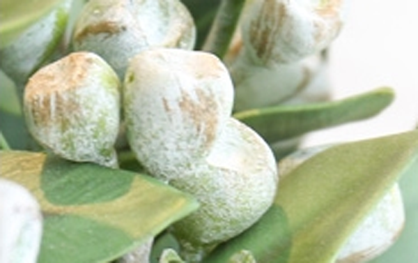

桉树果可以用来消炎、杀虫，还有发表祛风的功效，但是服用的用量切勿过多，下面中药大全小编和大家具体了解下桉树果功效与作用以及食用方法。

【桉树果功效】 消炎、杀虫、理气、健胃、栽疟、止痒、发表祛风
【主治】食积、腹胀、疟疾、皮炎、癣疮、流感、消化不良
【用法】内服：煎汤，3-9g;或研末。外用：适量，泡酒外涂。
【桉树果禁忌】
1、内服不宜过量
2、脾胃虚寒者慎服
3、月经期不要食用，属寒，容易引起月经紊乱
4、孕妇禁用
以上为桉树果功效与作用，以及食用方法和禁忌人群，希望对您有所帮助，查看更多中药请关注中药大全。